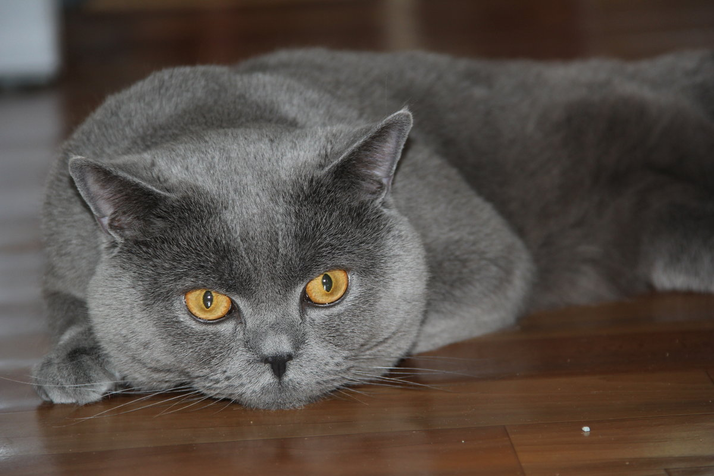
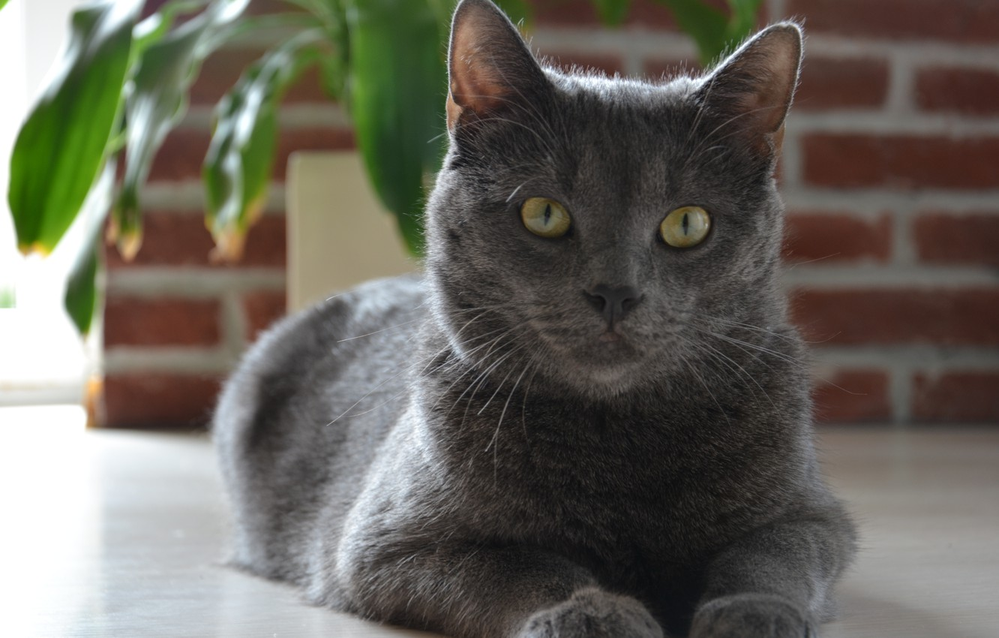
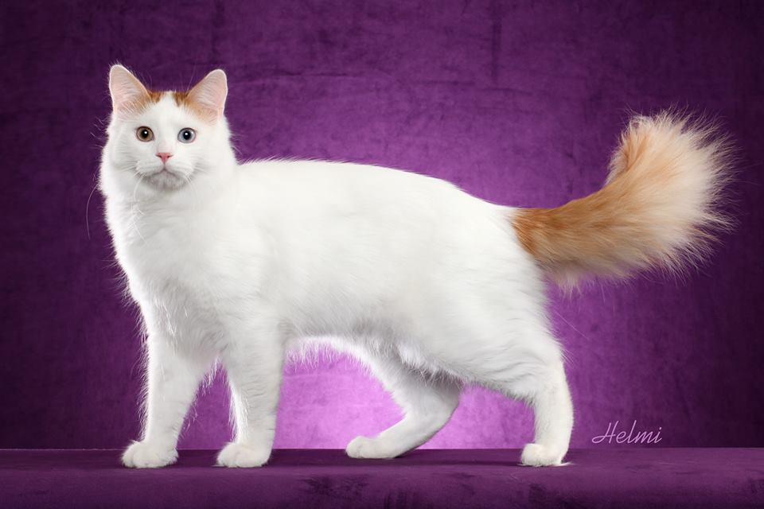

У нас вы можете насладиться бодрящим кофе и восхитетельной выпечкой в компании любимых питомцев!


новости
Прекрасная сиамская кошка была найдена в деревне Баймак
 Знакомьтесь с кошкой Капучиной. Невероятно красивая, грациозная, кофейного окраса - она коротала
свою жизнь возле мусорки в небольшой деревни Башкирии. Но нашлись добрый люди, которые
решили подарить ей любовь и заботу.
Знакомьтесь с кошкой Капучиной. Невероятно красивая, грациозная, кофейного окраса - она коротала
свою жизнь возле мусорки в небольшой деревни Башкирии. Но нашлись добрый люди, которые
решили подарить ей любовь и заботу.
Сейчас Капучина находится в нашем кафе-приюте и по ней видно, что она действително счастлива. Время, проведенное на безлюдной улице, не прошло мимо... Капучина не любит настойчивой ласки, ведет себя гордо и отсраненно. Поэтому кошечку лучше не напрягать излишним вниманием. Если она захочет ласки - обязательно прийдет к Вам сама. Ну а если она прикшла именно к Вам - можете считать себя избранным.
Несмотря на уличное существование, кошечка абсолютно здоровая. Сразу по приезду в город Магнитогорск была осмотрена ветеринаром и привита, обработана от всех паразитов для профилактики и стерилизована. Сейчас наша главная задача - откормить эту любимицу, поскольку жизнь довела ее до истощения.
Капучина ищет любящие и заботливые руки. Девочка отдается в семью без маленьких детей, людям, знающим толк в уходе за породистыми кошками. Естественно с последующим ненавязчивым отслеживанием жизни и здоровья питомца.
Беременную кошку была вынуждена "выживать" на улице из-за безответственных хозяев
 Шеба - гордая британка с шелковой шерстью, но сложной судьбой. Молоденькая кошечка была выброшена на улицу будучи беременной. Дбрые люди нашлии ее возле магазина в раоне Вокзала, она питалась отбросами, была очень измучена и истощена.
Сразу после того, как Шебу нашли на улице, ее сразу повезли к ветеринару, потому что кошка была в тяжелом состоянии. Как оказалось, она была беременна уже мертвыми котятами. Вероятнее всего она терпела насилие со стороны своих хозяев, поскольку котята были буквально "переломаны". Шеба пережила настоящую трагедию и предательство от самых близких существ.
Сейчас с ней все хорошо. Ее стерилизовали и обработали. К сожалению, Шеба еще с опаской идет на контакт с новыми людьми. Однако, если вы проявите немного терпения, Шеба станет самым любимым Вашим питомцем.
Кот редкой породы был найдет в подъезде многоквартирного дома
 Валера - голубой русский кот. Это очень грациозная порода, имеет горделивое и крепкое телосложение. Как ни странно, кот полностью здоров. Его подкармливали жители дома. Они и же и выложили объвление о находке. Мы не смогли пропустить мимо такую просьбу и приютили этого мальца.
Кот обработан от всех паразитов, осмотрен ветеринаром. Прекрасно идет на контакт и ладит со всеми любимцами и людьми.
Месячный котенок был спасен из под колес автомобиля
 Василий - невероятно красивый кот с шоколадной шерстью и огнеными глазами. Еще месячным
был выброшен на улицу в деревне Баймак и спасен неравнодушными людьми.
Василий - невероятно красивый кот с шоколадной шерстью и огнеными глазами. Еще месячным
был выброшен на улицу в деревне Баймак и спасен неравнодушными людьми.
Выбрасывая мусор, женщина с ребенком заметила маленького котенка, который пытался перебежать дорогу, увидев людей. Он едва не попал под колеса машины! Но вовремя успел отскочить. У Алены Сергеевны (женщины, которая спасла его), едва не остановилось сердце! Она сразу же забрала его домой и отвезла к нам в Магнитогорск.
Здесь он был осмотрен ветеринаром, обработан и привит. Через пару месяцев оказалось, что он заражен лишаем! Вот тогда пришлось не сладко всем... Лечению и профилактике подвергся не только Вася, но и все люди и животные, которые хоть раз контактировали с ним.
Сейчас это уже большой толстый и очень наглый котяра, который ищет дом! Обожает ласкаться и мурлыкать. Очень любит кушать хлебушек, особенно домашней выпечки. Обожает гулять на улице, лазить по деревьям, поэтому отдается только в свой дом внимательным хозяевам!
Бездомный кот буквально "требовал" внимания людей на улице
 Бисяй - в переводе с башкирского ознает "кот". Да, вот так просто "кот". Однако сам "кот" не так прост, как кажется. Он сам добился того, чтобы его забрали домой! Кот сидел на дровах возле одного из домов башкирской деревни и громко кричал и мяукал, завидев кого-либо из людей. Женщина не смогла пройти мимо мольбы о помощи и забрала его на передержку.
Кот невероятно красив - сам белый, с пушистым рыжим хвостом. Кот полностью здоров, не привередлив в еде, умен, не портит мебель, отлично знает лоток, но любит гулять на улице. Отдается в добрые руки, которые знают толк в уходе за пушистыми питомцами с прекрасной шерстью. Однако Бисяй очень свободолюбив, поэтому гуляет обычно за пределами участка, очень важно отслеживать его предвижение и быть готовым искать его в ближайшем районе!
Наглый кот прижился в одном из магазинов Магнитогорска
 Сугроб - белоснежный кот, который буквально сливается со снегом. Это неугомонное создание обожает беситься
и быть в центре внимания. У него до сих пор есть проблемы с лотком, поэтому ему
требуются терпиливые хозяева, которые имеют опыт дрессировки животных. Идеально было бы
пристроить Сугроба в свой дом, чтобы он мог спокойно гулять по его окрестностям.
Сугроб - белоснежный кот, который буквально сливается со снегом. Это неугомонное создание обожает беситься
и быть в центре внимания. У него до сих пор есть проблемы с лотком, поэтому ему
требуются терпиливые хозяева, которые имеют опыт дрессировки животных. Идеально было бы
пристроить Сугроба в свой дом, чтобы он мог спокойно гулять по его окрестностям.
Со здоровьем у Сугроба все прекрасно. Кот кастрирован, но это не делает его инфантильным, а скорее наоборот! Очень любит ласку, обоает сидеть на руках и на подоконнике среди цветов!